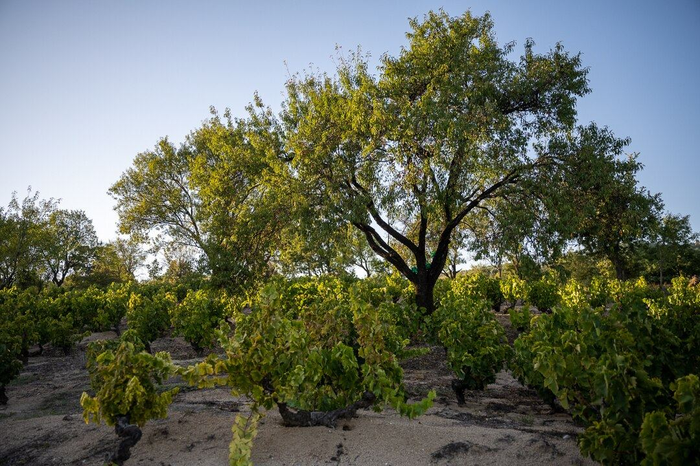

Turkey
Anatolia is one of the oldest lands of vine cultivation, and Turkey ranks among the world’s major grape producers, although only a small share goes into wine. Its wineries have revived native varieties such as Öküzgözü, Boğazkere, Kalecik Karası, Narince and Emir.

History
Anatolia and the neighbouring lands of the Caucasus and the Fertile Crescent are among the areas where the vine was cultivated earliest. Hittites, Phrygians, Greeks, Romans and Byzantines all made wine on the peninsula, and many ancient cities on the Aegean coast were known for their wines. Under the Ottoman Empire, winemaking and the wine trade were largely in the hands of non-Muslim communities, especially Greeks and Armenians, while most grapes were eaten fresh, as raisins or in the form of grape syrup, pekmez.
In the late nineteenth century, while phylloxera was ruining French vineyards, Anatolia exported significant quantities of wine to Europe, until the pest reached its own vines too. The wars of the early twentieth century and the population exchange with Greece in 1923 meant the loss of much local winemaking knowledge. In the Republic of Turkey, the state controlled production for decades through the Tekel monopoly, although the first large private wineries also appeared from the 1920s. From the late twentieth century, a new generation of wineries emerged, often medium-sized, investing in their own vineyards and in native grapes. Since 2013, a law has severely restricted the advertising and sale of alcoholic drinks, which limits how wineries can communicate.
Climate and soils
Turkey has great climatic diversity. The Aegean and Mediterranean coasts have a Mediterranean climate, with hot, dry summers; Thrace, in the European part, is influenced by the Sea of Marmara and the Black Sea; and the interior of Anatolia, a high plateau, is continental, with cold winters and sharp temperature differences between day and night. Soils range from the limestone and clay of Thrace and the Aegean to the volcanic tuffs of Cappadocia and the stony soils of the east of the country.
Grapes and styles
The country has hundreds of local varieties, though only a few are regularly used for wine. Among the reds, the leading ones are Öküzgözü (“ox eye”), from the Elazığ region, fruity and fresh; Boğazkere, from Diyarbakır, very tannic, with which it is often blended; and Kalecik Karası, from the Kalecik area near Ankara, with soft tannins. Among the whites, Narince from Tokat province, Emir from Cappadocia, Sultaniye, widely planted in the Aegean, and the Muscat of Bornova, near Izmir, stand out. International varieties such as Cabernet Sauvignon, Merlot, Syrah and Chardonnay are also grown, alone or blended with local grapes.
The most common styles are fruity or structured reds, fresh dry whites, rosés and a few sweet Muscat wines. Many are made from a single variety, which is stated on the label, although the blend of Öküzgözü and Boğazkere is a classic of the country.
Regions and regulations
The main wine areas are Thrace and the Marmara region; the Aegean region, around Izmir, Manisa and Denizli, which holds much of the vineyard area; Central Anatolia, with Cappadocia and the Ankara area; and Eastern and South-eastern Anatolia, around Elazığ and Diyarbakır. Turkey does not have a system of designations of origin as developed as that of European Union countries, so labels usually state the grape variety and the province or vineyard of origin.